Nos réalisations parlent pour nous.
Depuis 1996, des centaines de réalisations sont sorties de nos ateliers, certaines au prix de prouesses techniques pour s’intégrer dans des espaces réduits, étroits, sur un ou plusieurs niveaux.
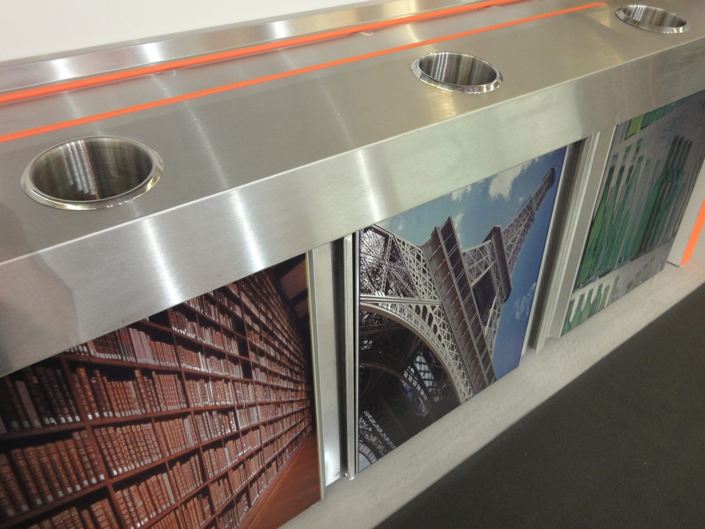

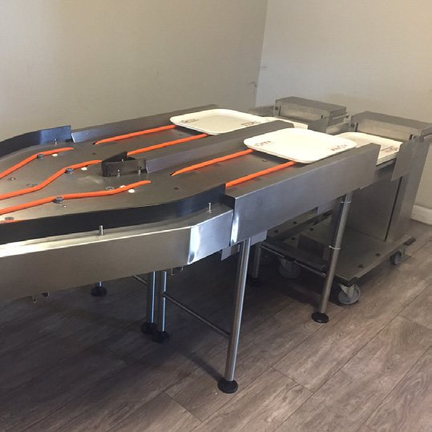


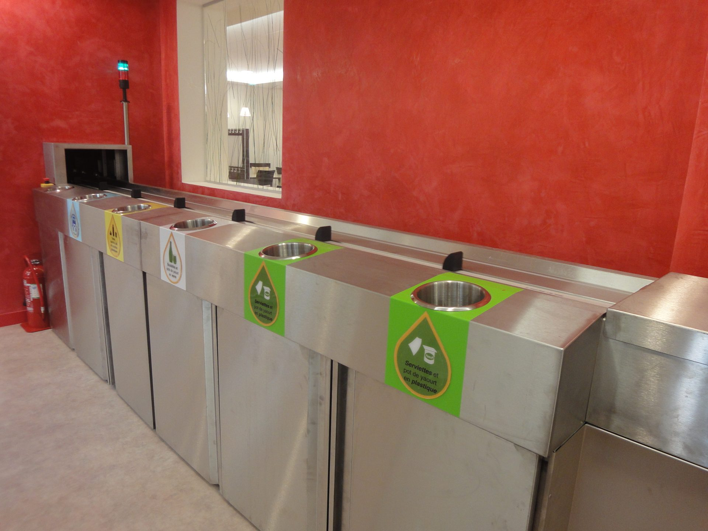
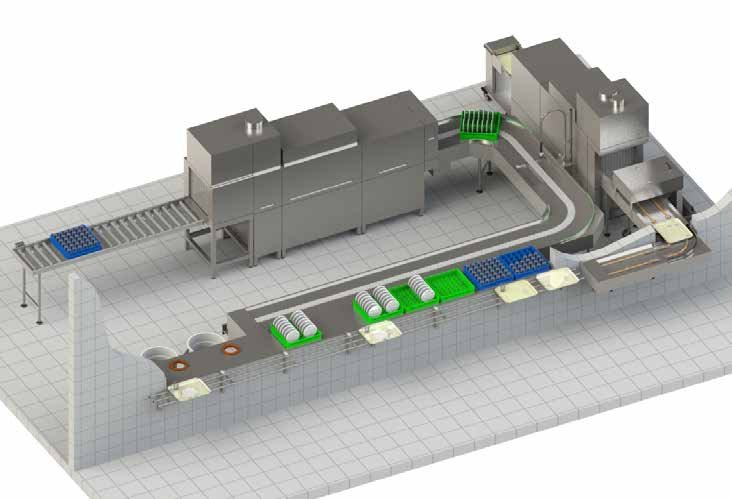

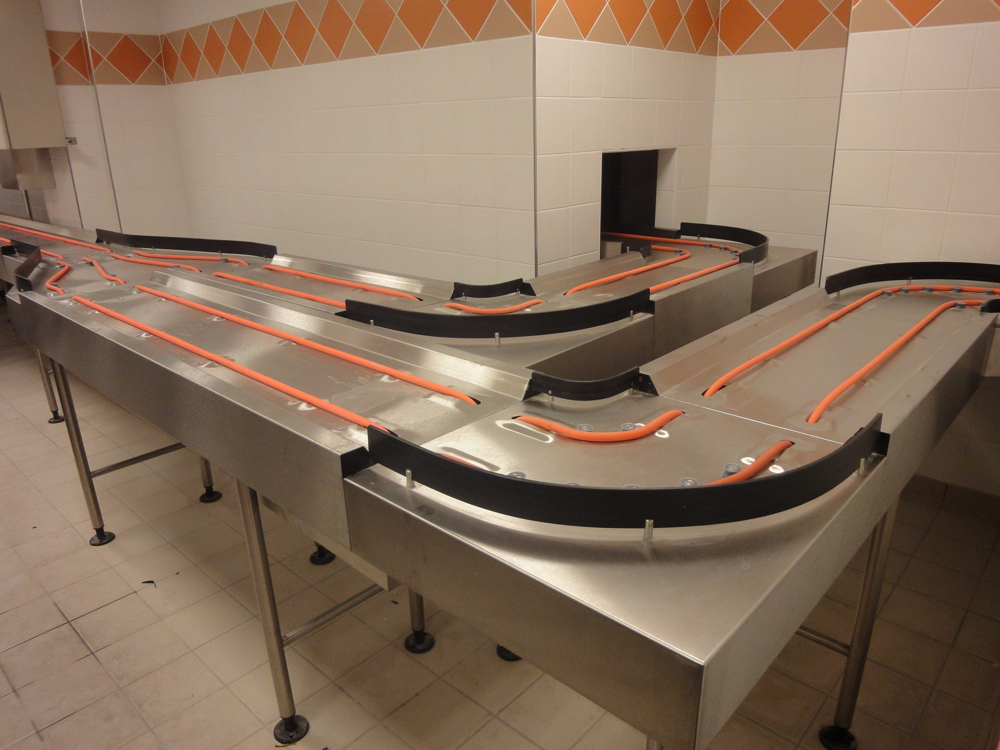


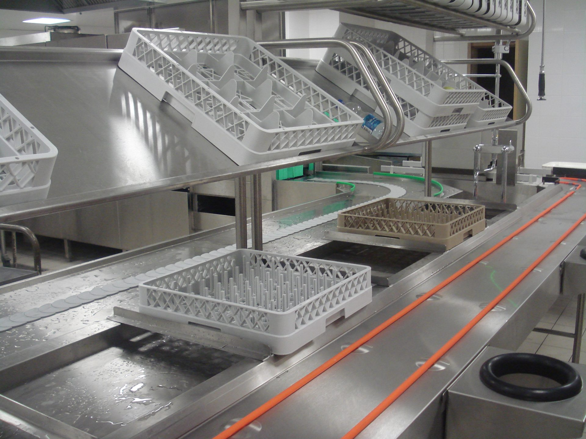


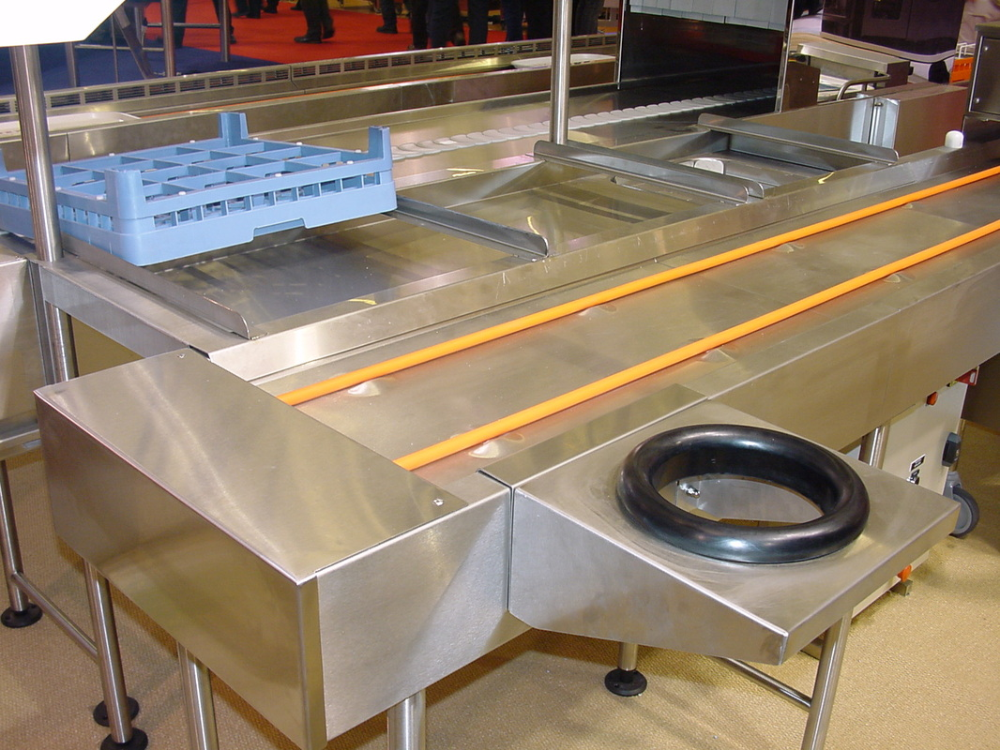
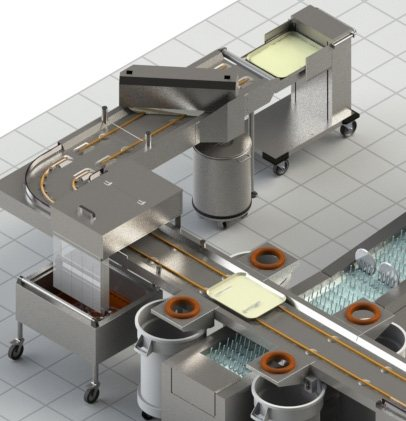


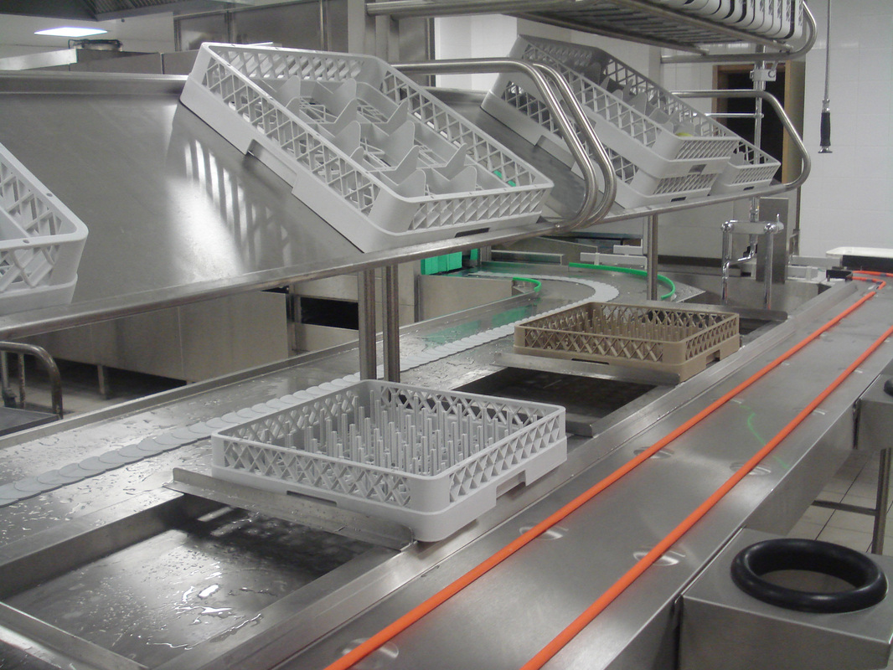


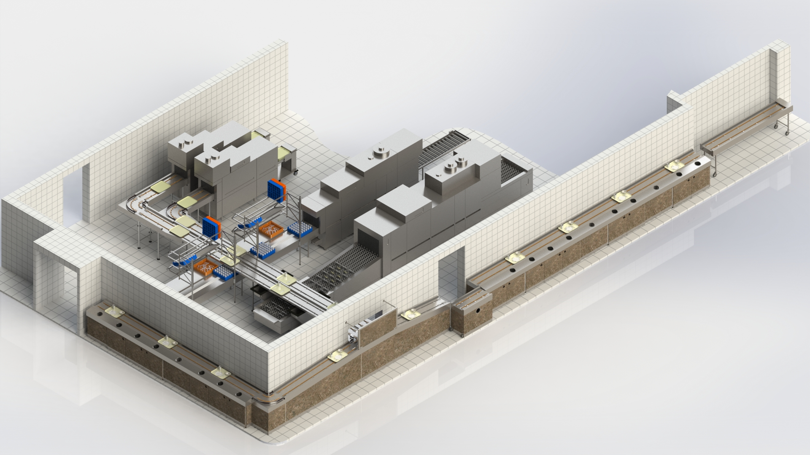

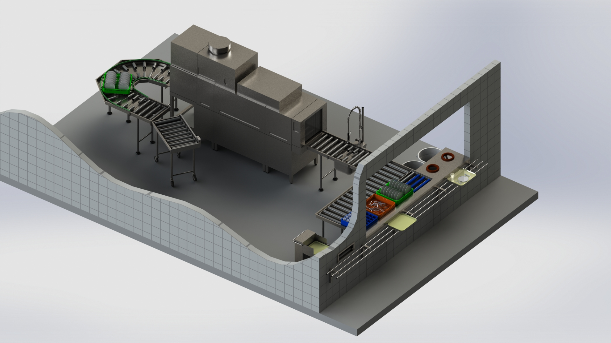
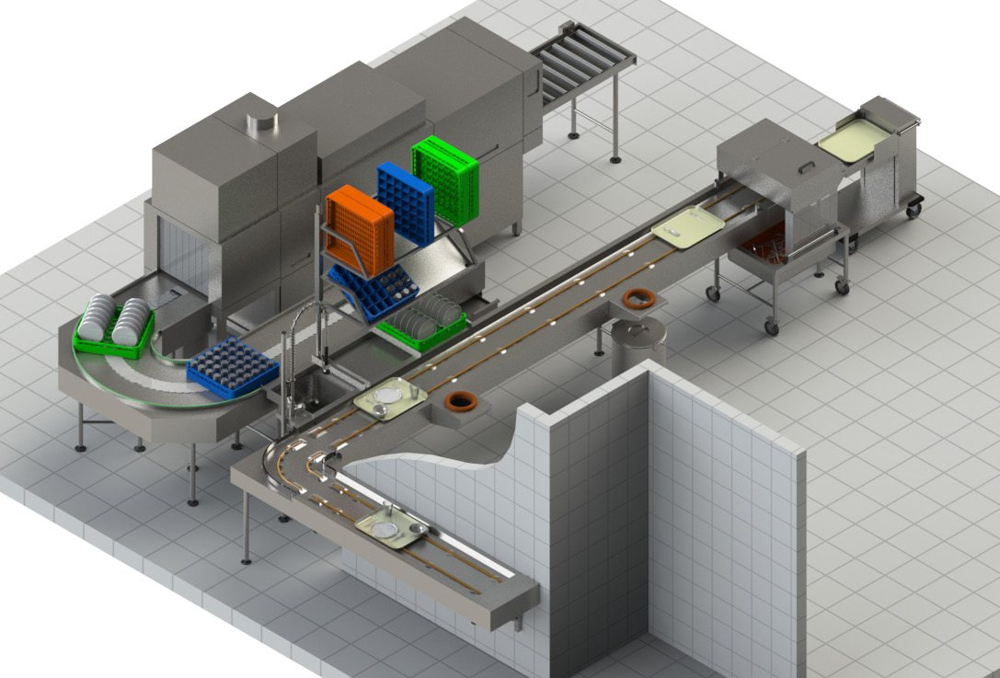

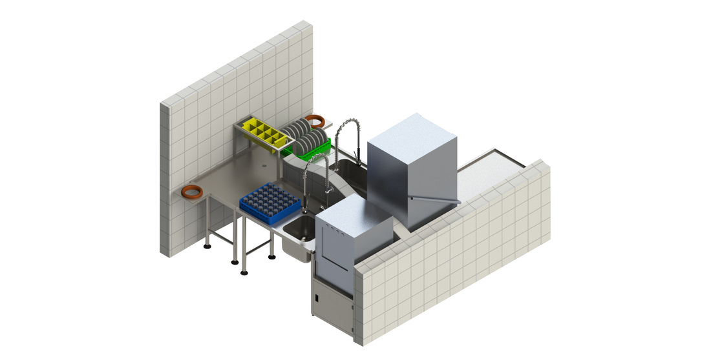

- L’Oréal
- R.U. Dauphine
- BNP rue Thérèse
- Société Générale Valmy
- Lycée Richelieu
- Hôtel Shangri-La
- ASPP
Source : page « Notre histoire » du site actuel.
Depuis 2005, Sopacom Concept participe au développement de la restauration thématique. Après une quarantaine de références dans le convoyeur à sushi « Sushi Bar », Sopacom Concept a participé à de nombreux concepts :
Little Italy · Schwartz’s · OUR · Il Natural · Oggi · Crêpe Story · Pain et le Vin · Olive et Balsamique · Delitaly · Bus Palladium · Paradis du Fruit · ZO · Seine Alliance
Source : page « Sopacom Concept » du site actuel.